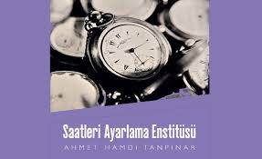

Tutunamayanlar – Oğuz Atay
Türk Edebiyatının en önemli yazarlarından Oğuz Atay’ın ilk eseri Tutunamayanlar, yazarın dili ve anlatım tarzı
itibarıyla Türk Edebiyatında yeni bir dönemi başlatmıştır. 2002 yılında UNESCO tarafından İngilizce diline
çevrilmesi gereken seçkin edebiyat eseri olarak seçilen eser, söyleyiş biçimi bakımından postmodern edebiyat
kategorisinde değerlendirilmektedir. Türk klasikleri arasında yerini alan Tutunamayanlar’da, modern insanın
açmazlarının en etkili şekilde ifade edilmesinin arkasında Oğuz Atay’ın duyarlılığının yanı sıra eserin biçim
Sinekli Bakkal – Halide Edip Adıvar
Milli mücadelenin kadın kahramanı Halide Edip Adıvar’ın ünlü romanı, Türk klasikleri arasında yer alan Sinekli
Bakkal, temel olarak doğu-batı çatışmasını irdeleyen bir eser. Bu çatışmayı daha küçük yaştan dini eğitim alan
güzel sesli Rabia’nın, İtalyan piyanist Peregrini’ye olan aşkı sembolize etmektedir. Hafız olan Rabia, tasavvufi
bakımdan doğuyu, Peregrini ise akılcılık bakımından batıyı temsil etmektedir. Peregrini’nin Müslüman olmasıyla
Rabia ile evlenirler ve bu çatışma bir birleşmeyle neticelenir. Adıvar’ın toplumsal meselelere felsefi bir yaklaşım
sergilediği romanı Yaşar Kemal tarafından da bir şaheser olarak yorumlanmıştır.
Saatleri Ayarlama Enstitüsü – Ahmet Hamdi Tanpınar

Şair, roman ve deneme yazarı, siyasetçi, edebiyat tarihçisi ve akademisyen Ahmet Hamdi Tanpınar, çok yönlü
kişiliğiyle Türkiye’nin yetiştirdiği en önemli isimlerden biri. Yazarın usta kaleminden çıkan Saatleri Ayarlama
Enstitüsü 1961 yılında yayımlandı. Büyük Ümitler, Küçük Hakikatler, Sabaha Doğru ve Her Mevsimin Sonu Vardır isimli
dört bölümden oluşan eser Doğu ve batı uygarlığı arasında kimlik mücadelesi veren Türk toplumunun trajikomik
hikâyesini anlatır. Bunların yanı sıra bireye ve topluma yönelik gözlemler ve zaman ile ilgili sorgulamalar da
içermesiyle Tanpınar’ın eseri evrensel temalar üzerine kurulmuştur.